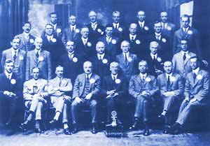

|

The Rotary Club of Invercargill was founded on
25th February 1924 under the sponsorship of
the Dunedin Rotarians who visited the city and
enrolled our initial 24 members. We were the 6th
Rotary Club formed within New Zealand and
given the founding number 1734.
In the beginning
we concentrated on the development
of
fellowship and studying the History.
Two special
features introduced at this time are
still in use
today - the weekly newsletter and the
'parting
thought'.
Very soon we
moved on to undertake projects and
donate our
services to the local community.
|
The first
project we undertook was within the Borstal
starting up
a "Big Brothers" scheme for inmates -
this was
before the days of rehabilitation and
Prisoners
Aid. We have come a long way since then,
from just
community services we have progressed
to the
national and international arenas, giving our
support and aid to many schemes, such as: Omaui
Health Camp,
Crippled Children Society - (actually
founded by Rotary, Timaru Branch),
YMCA,
The Blind
Centre, Southland Museum & Art Gallery,
Deep Cove
Hostel, The Annual Book Sale,
Rotary Youth
Exchange, Rotary Foundation
Scholarships, World Community Service, Interact /
Rotaract, Inner Wheel
From that
initial membership of 24 our club has
expanded to
approximately 100. We have been
instrumental
in forming a further six clubs within
Southland,
established fireside
forums, introduced
the three minute talk,
produced six District
Governors,
been recipients of the Paul Harris
Fellowship and have won both the Colty and the
David Ewen Attendance Cups.
We are proud of our achievements to date and look
forward to
many more years of dedicated service
to our
community and the continued promotion of
Rotary. |